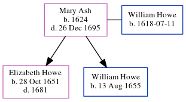

Mary Ann Howe (née Ash) 1624 - 1695
[ Home ] | [ Calendar ] | [ Surnames Index ] | [ Census Index ] | [ Family History ]Mary Ash was born in Concord, Middlesex, Massachusetts, USA in 16241 and married William Howe (with whom she had 2 children: Elizabeth and William) in Houghton Regis, Bedfordshire, England in 1650. In 1861, she was living in Frindsbury, Kent, England1.
She died on Dec 26, 1695 in Concord.
Children
- Elizabeth was born on Oct 28, 1651
- William was born on Aug 13, 1655
Citations
- 1861 England Census Online publication - Provo, UT, USA: MyFamily.com, Inc., 2005.Original data - Census Returns of England and Wales, 1861. Kew, Surrey, England: The National Archives of the UK (TNA): Public Record Office (PRO), 1861. Data imaged from the National Archives,
Family Tree
Generated by ged2site. Last updated on Jun 6, 2024